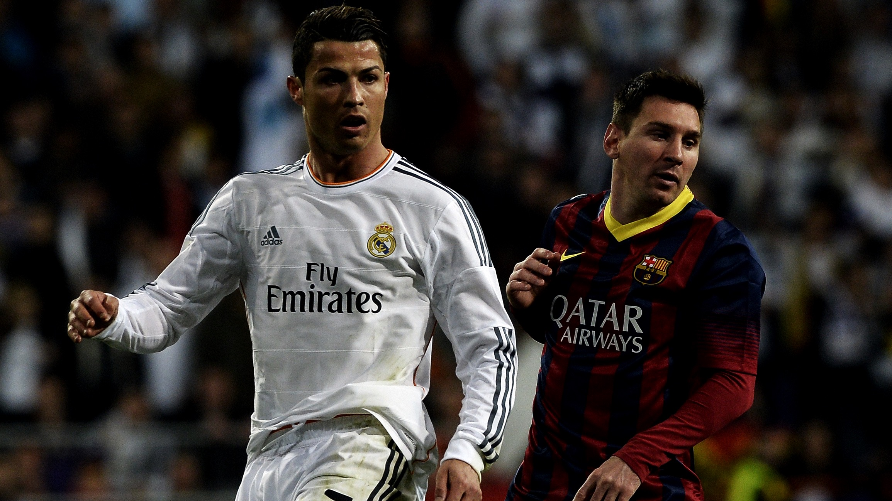

La Liga Española
La Liga Española, también conocida como LaLiga, es la principal competición de fútbol profesional en España. Con equipos icónicos como Barcelona, Real Madrid y Atlético de Madrid, la liga atrae a fanáticos de todo el mundo.
Descubre más sobre la emocionante historia y los momentos legendarios de La Liga Española.